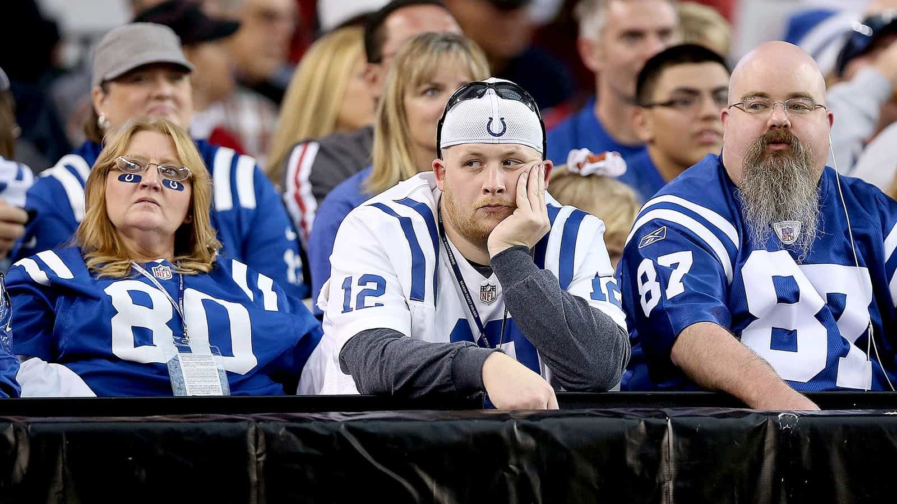
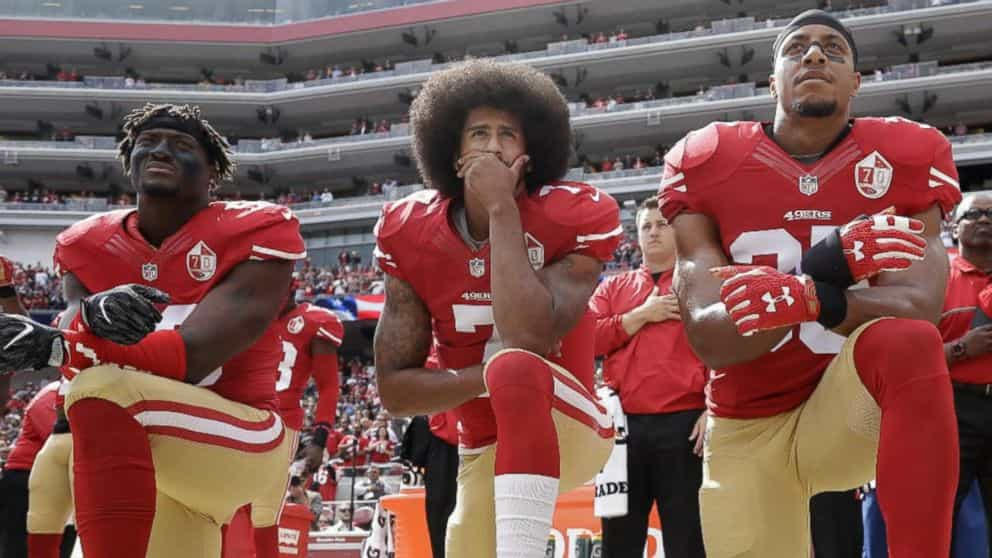

Brian is an artist, poet and cheerful pessimist. He strives to reach literary godhood and levels of unbridled artistic expression. But for now you can read his blog or follow him on Twitter and Instagram.


If you haven’t heard, Vince McMahon is resurrecting the XFL in 2020, and if I was Roger Goodell, I would be very, very afraid. McMahon is somebody who has been in and around sports and sports entertainment for a very long time. He took the reins of the WWE in 1982, and it is still a very strong brand with high viewership and decent ratings. The WWE has been thriving for decades now. Not as long as the NFL, but… you see my point.
Vince is a calculating businessman, and a highly successful one. The original XFL was a failure because it didn’t take itself too seriously. But that was a different time.
Now, the NFL has made the mistake of taking itself too seriously. It has annoyingly embedded itself in political and social issues, rather than remaining neutral and impartial. We don’t care what Colin Kaepernick says about racial prejudice, or anything that Al Michaels says about anything. Their condescending ignorance is painfully hollow. We don’t care about their politics. We just want football!
So here are three reasons why the NFL should fear McMahon’s potential gridiron messiah…

Honestly, we just want to see these idiots (the players) kill each other (on the field, of course, though some of them have taken their work home with them), and we’re not even allowed that! A whole bevy of slanted rules of contact favoring quarterbacks, halfbacks, and wide receivers (the owners’ hottest commodities) have taken away a lot of the defensive spectacle that old football had.
Even the kickoff is ruined for the sake of mitigating violence. Imagine the most adrenaline-packed playoff game, the hype leading up to it, the crowd—the mob is primed and ready and drunk since 9AM—and the very first thing that happens is a disappointing sequence of inaction. A touchback! O holy blue balls!
Soon, it might all very well be flag football exclusively. Never say never when it comes to greed and the protection of the owners’ prized stallions.
Another malady the No Fun League refuses to treat is the pace of games, which have become nauseatingly sluggish. With the over-analyzing of replays and incessant penalties, which are reportedly up 20 percent since 2009, a sport that was once teeming with exciting moments and memorable displays of physical feats has been reduced to a time drag, a slow crawl to the next commercial break. When the Little League World Series is more exciting than the Super Bowl, you know you’re in trouble.
The maudlin, inebriated ballads of the disgruntled Browns fan in the corner of the pub are far more interesting. And in these ballads, you hear voices. Through the slurring of adjectives and expletives, the mob is in a confused, delirious state of discontent.

The mob is growing tired of prima donna athletes, who chew and spit out the hands that elevated them from street thug to penthouse thug. What image is the league presenting by jumping on the “progressive” bandwagon, yet handing out slaps on the wrist and second chances to convicted felons and ultimately glorifying this behavior? The mob has had enough of the double standards.
And finally, the mob is growing tired of the unpatriotic atmosphere these ignoramuses perpetuate, even if it’s all at the behest of their overlords. They simply do what they’re told. But they’ve forgotten that they exist for our entertainment. For our amusement. And nobody is forcing them to do it. You assume the risk of bodily injury by putting on the pads. Don’t like it? Don’t play. Simple as that.
With ratings hitting all-time lows (down 9% in week 15), merchandise sales plummeting, and attendance deteriorating faster than Dak Prescott’s intangibles, fans are hungry for a new medium to sate their inherent thirst for blood, for contemporary gladiatorial games to commence once again. They just don’t know it yet. The desire has been laying dormant as of now. People have come to terms with the NFL monopoly. At least it’s something, right?
As a result, the NFL has been getting away with mediocrity for years, except now they’ve exposed their flaws for the world to see, and Janet Jackson’s nip slip may be more prophetic than we initially realized. There are cracks in the foundation. And the XFL might just find enough room to squeeze in.
Yes, there’s a market for new football. Gritty, spectacular, testosterone-fueled blood sport. And Vince McMahon is no doubt salivating at the chance of redeeming himself in this market. McMahon understands that football should be entertainment primarily, because that is exactly what it is and should be treated as.
Just imagine a Roman gladiator, a person barely higher than the level of slave, screaming up from the pit instead of battling tigers, attempting to dictate what the Senate should do. Nobody would listen. There’s a time and place for everything, and politics do not belong in sport.
McMahon believes this and is making it a selling point. A shrewd, tactical approach in the wake of a season that will be remembered more for tabloid headlines instead of what really matters: the football itself. He also believes that players with criminal records will not enjoy the eventual fruits this rebooted league will bear.
With standards so low in our society as it pertains to culture for what degeneracy, the new XFL will be a deep, crisp breath of fresh air. A clean inhale, free from the smog of politics and pop culture brain-rot.
Ironically, this competition may be good for the NFL, who will no doubt be forced to improve their own image and the quality of their product if the XFL becomes more popular. Only time will tell.
But if McMahon has learned anything from his friend Trump, playing to the mob and giving the people what they truly want is a model to be emulated and repeated, something the NFL has forgotten.
Read More: 4 Reasons Why Americans Will Never Fully Embrace Soccer